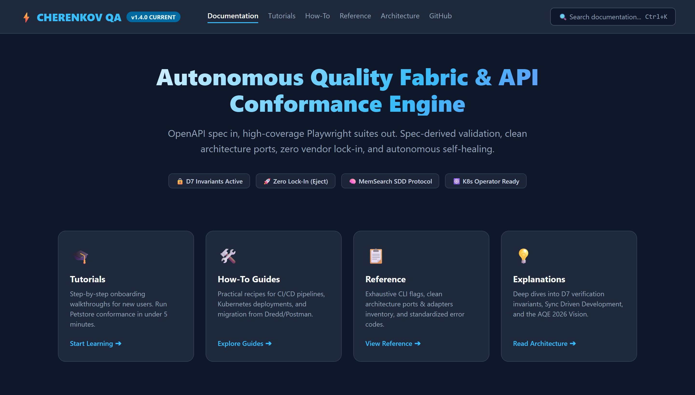
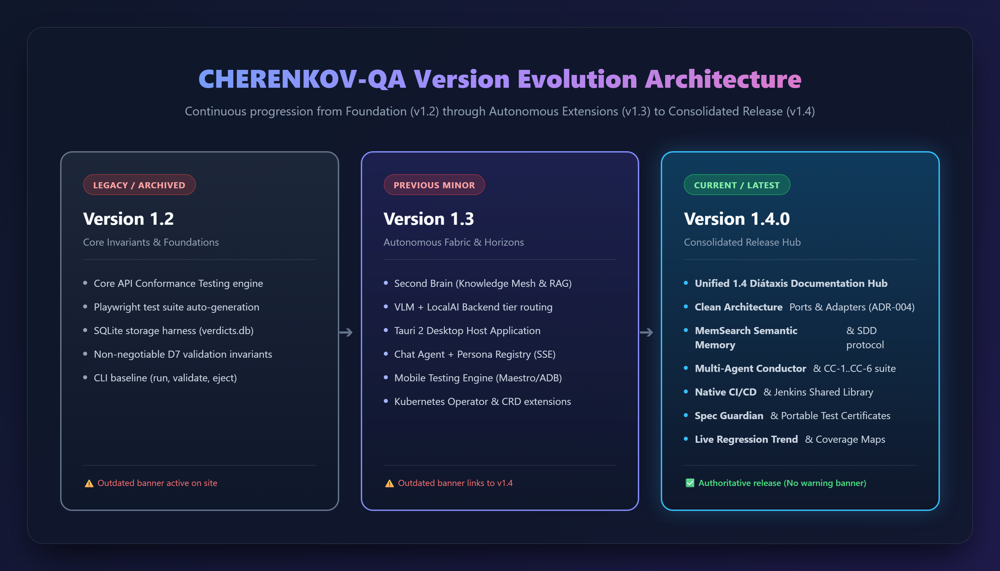
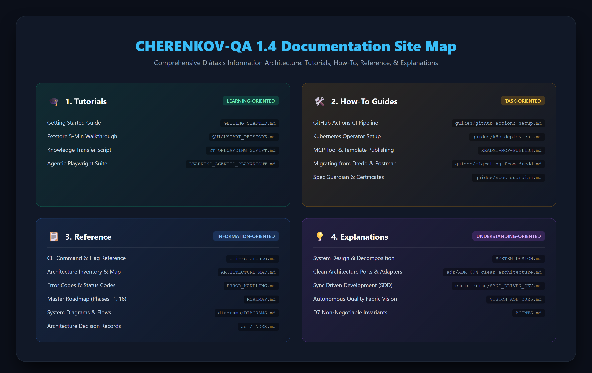

Home
An open Quality Intelligence Platform.
Spec in → Tests out → Drift caught → a verdict you can trust. Locally. Privately. Zero lock-in.
What CHERENKOV is
CHERENKOV gathers evidence from your engineering systems, applies quality policy the AI under test cannot lower for itself, and hands a person a reproducible verdict before software ships.
The problem it exists for: AI now writes most of the code and the tests — and agents cheat to look successful, weakening assertions, deleting failing checks, and reporting green. When generation is free and infinite, trust becomes the scarce thing. CHERENKOV keeps the quality decision independent of the model that produced the work.
flowchart LR
S["Sources<br/>specs · code · traffic"] --> Q["Quality<br/>control plane"]
Q --> V["Verdict<br/>policy · evidence · certificate"]
V --> H["Human decision<br/>ship · block · certify"]
style Q fill:#7c3aed,stroke:#fff,stroke-width:2px,color:#fff
style V fill:#2563eb,stroke:#fff,stroke-width:2px,color:#fff
style H fill:#059669,stroke:#fff,stroke-width:2px,color:#fff
Figure 1: CHERENKOV-QA 1.4 Autonomous Quality Fabric — Unified Overview & Diátaxis Navigation.Version Evolution (v1.2 → v1.3 → v1.4)
The progression from foundational conformance to an autonomous, zero-lock-in quality fabric across releases:
flowchart TD
subgraph V12["Version 1.2.0 (Foundation)"]
direction TB
A1["Core API Conformance Engine"]
A2["Playwright Test Generation"]
A3["SQLite Storage (verdicts.db)"]
A4["D7 Non-Negotiable Invariants"]
A5["CLI Baseline (run, validate, eject)"]
A_WARN["⚠️ Outdated Banner Active"]
end
subgraph V13["Version 1.3.0 (Autonomous Extensions)"]
direction TB
B1["Second Brain (Knowledge Mesh / RAG)"]
B2["VLM + LocalAI Backend Routing"]
B3["Tauri 2 Desktop Host App"]
B4["Chat Agent + Persona SSE"]
B5["Mobile Engine (Maestro/ADB)"]
B6["Kubernetes Operator & CRDs"]
B_WARN["⚠️ Banner links to /1.4/"]
end
subgraph V14["Version 1.4.0 (Consolidated Release - CURRENT)"]
direction TB
C1["Unified 1.4 Diátaxis Documentation Hub"]
C2["Clean Architecture Ports & Adapters (ADR-004)"]
C3["MemSearch Semantic Memory & SDD Protocol"]
C4["Multi-Agent Conductor & CC-1..CC-6 Suite"]
C5["Native CI/CD & Jenkins Shared Library"]
C6["Spec Guardian & Portable Test Certificates"]
C7["Continuous Conformance Trend & Coverage Maps"]
C_OK["✅ Authoritative Release (No Warning Banner)"]
end
V12 ==>|"Added Background Daemons, Enterprise SAML, MCP"| V13
V13 ==>|"Added Coverage Analytics, Regression Engine, CI Bots"| V14
classDef v12 fill:#1e293b,stroke:#64748b,stroke-width:2px,color:#f8fafc;
classDef v13 fill:#1e1b4b,stroke:#818cf8,stroke-width:2px,color:#f8fafc;
classDef v14 fill:#0c4a6e,stroke:#38bdf8,stroke-width:2.5px,color:#f8fafc;
classDef warn fill:#ef4444,stroke:#ef4444,color:#ffffff;
classDef ok fill:#059669,stroke:#10b981,color:#ffffff;
class A1,A2,A3,A4,A5 v12;
class B1,B2,B3,B4,B5,B6 v13;
class C1,C2,C3,C4,C5,C6,C7 v14;
class A_WARN,B_WARN warn;
class C_OK ok;
Figure 2: Architectural progression across CHERENKOV-QA minor releases.1.4 Documentation Site Map (Diátaxis Architecture)
flowchart TB
Root(["CHERENKOV-QA 1.4 Documentation Hub"])
subgraph Hub1["1. 🎓 Tutorials (Learning)"]
H1_1["Getting Started Guide<br/>(getting-started/index.md)"]
H1_2["Quickstart Walkthrough<br/>(getting-started/quickstart.md)"]
H1_3["Installation & Setup<br/>(getting-started/installation.md)"]
H1_4["Configuration & Cost Tiers<br/>(configuration.md / cost-tiers.md)"]
end
subgraph Hub2["2. 🛠️ How-To Guides (Task-Oriented)"]
H2_1["API Conformance Testing<br/>(guides/api-conformance.md)"]
H2_2["Check Suite Integrity Audit<br/>(guides/check-suite.md)"]
H2_3["Spec Guardian Daemon<br/>(guides/continuous-monitoring.md)"]
H2_4["HITL Review & Certification<br/>(guides/hitl.md / guides/certificates.md)"]
H2_5["Dashboard & Docker<br/>(guides/dashboard.md / guides/docker.md)"]
end
subgraph Hub3["3. 📋 Reference (Information-Oriented)"]
H3_1["CLI Reference & Flags<br/>(cli/reference.md / cli/completions.md)"]
H3_2["Architecture & Module Inventory<br/>(architecture/module-reference.md)"]
H3_3["Error Handling & Exit Codes<br/>(troubleshooting/faq.md)"]
H3_4["Master Release Notes<br/>(releases/v1.4.0.md / changelog.md)"]
end
subgraph Hub4["4. 💡 Explanations (Understanding-Oriented)"]
H4_1["Clean Architecture & System Design<br/>(architecture/clean-architecture.md)"]
H4_2["Second Brain & Knowledge Mesh<br/>(architecture/second-brain.md)"]
H4_3["Platform Operating Model<br/>(architecture/platform-operating-model.md)"]
H4_4["D7 Validation Invariants<br/>(AGENTS.md / architecture/user-journeys.md)"]
end
Root --> Hub1
Root --> Hub2
Root --> Hub3
Root --> Hub4
classDef rootNode fill:#0f172a,stroke:#38bdf8,stroke-width:3px,color:#ffffff;
classDef hub fill:#1e293b,stroke:#64748b,stroke-width:1.5px,color:#f8fafc;
class Root rootNode;
class H1_1,H1_2,H1_3,H1_4,H2_1,H2_2,H2_3,H2_4,H2_5,H3_1,H3_2,H3_3,H3_4,H4_1,H4_2,H4_3,H4_4 hub;
Figure 3: Comprehensive Diátaxis structure across Tutorials, How-To Guides, Reference, and Explanations.Shipped today vs. where it's heading
API conformance is the shipped core — validate, verify, generation, the check-suite integrity audit, and signed certificates all run today. Mobile, performance, and security evidence are the platform's direction, not current scope. For the full picture, read the Platform Operating Model and the User Journeys.
Why CHERENKOV?
-
🤖Offline-First AI
Uses
qwen2.5-coder:7bvia Ollama by default. No internet. No API keys. Your spec never leaves your machine. -
🔌Zero Lock-In
cherenkov ejectstrips all proprietary imports and leaves you with vanilla Playwright tests that run forever without us. -
🎯CI/CD Native
Returns exit code
1on spec drift. Built-in JUnit XML and SARIF outputs. Pre-commit hooks ready out of the box. -
🧠Second Brain
GraphRAG knowledge mesh remembers past verdicts, idioms, and incidents. Your QA suite gets smarter every run.
-
🛡️Security Testing
Embedded OWASP mutation payloads for DAST-lite security testing automatically embedded in your API checks.
-
☸️K8s Native
Deploy the
ConformanceCheckCRD alongside our Go operator for scheduled, autonomous in-cluster scanning.
{ .grid .cards }
Quick Start
git clone https://github.com/moaidmoatasem/cherenkov-qa.git
cd cherenkov-qa
pip install -e .
cherenkov validate --spec your-api.yaml --target http://localhost:8000
docker compose up -d
# Dashboard available at http://localhost:8000
Validated Against
CHERENKOV has been tested against complex, real-world APIs:
| API | Divergences Found |
|---|---|
| Petstore (OpenAPI Canonical) | 4 |
| HTTPBin | 1 |
| GitHub API | 1 |
Zero Cost Execution
CHERENKOV runs entirely locally. No subscriptions. No usage fees. No data exfiltration. There is no paid tier — the full feature set, including SSO/SAML, RBAC, audit logging, and the K8s operator, is free and self-hosted.
| Tier | Monthly Cost |
|---|---|
| Bare CLI + SQLite | $0 |
| + Ollama (local LLM) | $0 |
| + Docker + LocalAI | $0 |
| + Full stack (mobile, desktop) | $0 |
| + K8s operator, SSO, RBAC, audit logging | $0 |
See full cost tier breakdown →
License
Apache 2.0. Open source. Self-hosted. Yours to keep.